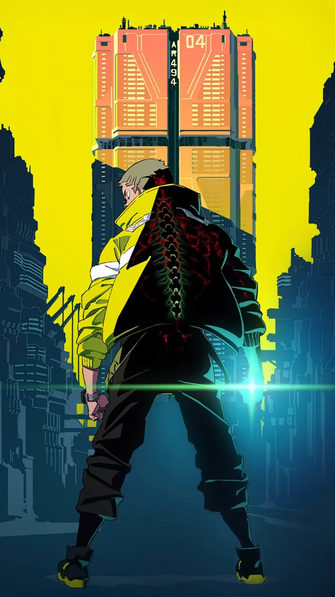

En las últimas horas, se filtraron reportes que indican que Arasaka estaría probando implantes neuronales de reacción avanzada en habitantes de los barrios bajos de Night City. Los implantes prometen reflejos sobrehumanos, pero varios sujetos han presentado episodios de pérdida de identidad y comportamientos violentos, lo que ha reavivado el debate sobre la ética del ciberdesarrollo corporativo.
Una nueva pandilla conocida como los Neon Runners ha comenzado a ganar territorio en Watson utilizando ciberimplantes ilegales de alta velocidad. Testigos aseguran que sus miembros pueden moverse más rápido que los sistemas de vigilancia urbana, mientras la NCPD admite tener dificultades para rastrear su origen y patrocinadores.
Tras el apagón masivo en Pacifica, varios netrunners reportaron la presencia de una inteligencia artificial no registrada operando en la red profunda de la ciudad. Algunos creen que se trata de una IA nacida del colapso del Viejo Net, mientras las megacorporaciones guardan silencio y refuerzan sus firewalls internos.